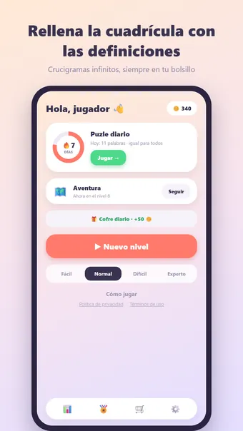
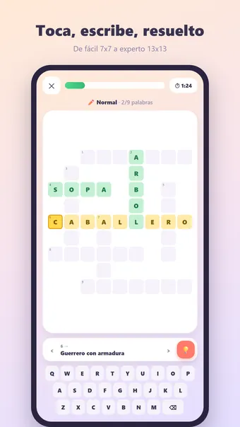
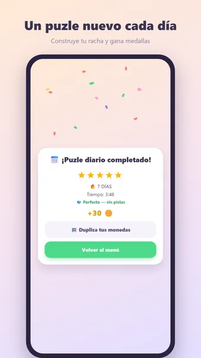
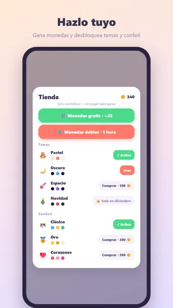

Sobre Crucigrama
Juega a Crucigrama, el puzle clásico — donde quieras y sin conexión. ¡Lee las definiciones y rellena la cuadrícula!
Cómo se juega
Cada puzle se genera al momento: una cuadrícula donde todas las palabras se cruzan, cada una con su definición. Toca una casilla para elegir una palabra (toca de nuevo para cambiar entre horizontal y vertical) y escribe con el teclado. Las palabras correctas se ponen verdes. El nivel termina cuando toda la cuadrícula es correcta.
Cuatro niveles de dificultad
- Fácil: 7×7 con 6 palabras
- Normal: 9×9 con 9 palabras
- Difícil: 11×11 con 13 palabras
- Experto: 13×13 con 17 palabras — para auténticos puzleros
Modo aventura
Avanza por cientos de niveles numerados cada vez más difíciles. Desbloquéalos uno a uno, gana una medalla en cada uno y recoge recompensas por el camino — por mundos de colores, del bosque al espacio.
Puzle diario
Cada día un puzle único, el mismo para todos. Gana una medalla de 1 a 5 estrellas y construye una racha: ¡3, 7, 30 o incluso 100 días seguidos!
Monedas y temas
Gana monedas con cada nivel completado y gástalas en pistas o nuevos estilos: Bosque, Espacio, Neón, Madera, Mármol, Navidad y Halloween. Solo cosmético — sin pay-to-win.
Y además
- Las pistas revelan una letra o una palabra entera
- 23 logros, desde tu primer nivel hasta cien días seguidos
- Estadísticas detalladas: mejor tiempo, niveles perfectos y más
- Modo zen: oculta el cronómetro y juega relajado
- Sonido y vibración (desactivables en los ajustes)
- Disponible en español, inglés, neerlandés, alemán, francés y portugués — el idioma también determina las definiciones
Gratis. La app muestra anuncios, que puedes quitar con una compra opcional; no necesitas cuenta.
Preguntas frecuentes
¿Crucigrama es gratis?
Sí. Crucigrama se descarga y se juega gratis. La app muestra anuncios, que puedes quitar con una compra opcional dentro de la app.
¿Crucigrama funciona sin conexión?
Sí. Crucigrama funciona sin conexión a internet, así que puedes jugar en el avión, en el tren o en cualquier sitio sin wifi.
¿Necesito una cuenta para jugar a Crucigrama?
No. No hay que registrarse ni iniciar sesión: abre la app y juega. Tus partidas y ajustes se quedan en tu propio dispositivo.
¿Cómo se juega a Crucigrama?
Cada puzle se genera al momento: una cuadrícula donde todas las palabras se cruzan, cada una con su definición. Toca una casilla para elegir una palabra (toca de nuevo para cambiar entre horizontal y vertical) y escribe con el teclado. Las palabras correctas se ponen verdes. El nivel termina cuando toda la cuadrícula es correcta.
¿Hay un reto nuevo cada día?
Cada día un puzle único, el mismo para todos. Gana una medalla de 1 a 5 estrellas y construye una racha: ¡3, 7, 30 o incluso 100 días seguidos!
¿Dónde puedo descargar Crucigrama?
Crucigrama está disponible para móviles y tabletas Android en Google Play. Usa el botón de la parte superior de esta página.
Otros juegos que te pueden gustar
Sopa de Letras
La clásica sopa de letras. Puzles infinitos y un nuevo reto cada día.
Google PlayWord Connect
Conecta letras y forma palabras. Puzles infinitos y un nuevo reto cada día.
Google PlaySudoku
El sudoku clásico. Puzles infinitos y un reto nuevo cada día.
Google PlayInformación legal
Aquí encontrarás los documentos legales que se aplican a Crucigrama.
Contacto
¿Preguntas, comentarios o una solicitud de privacidad? Escribe a joostmuijsenberg.dev@gmail.com.